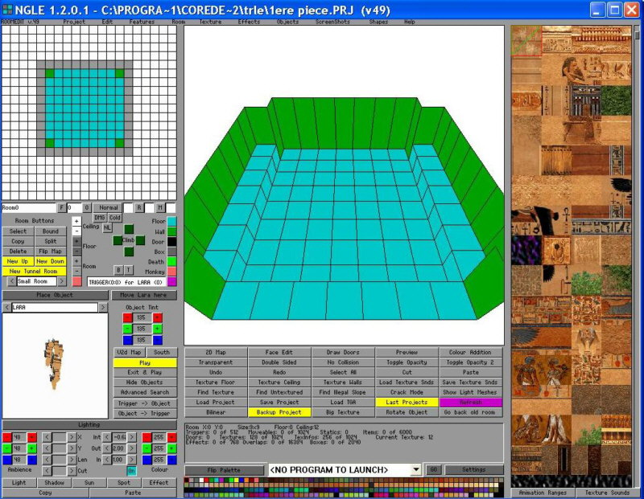
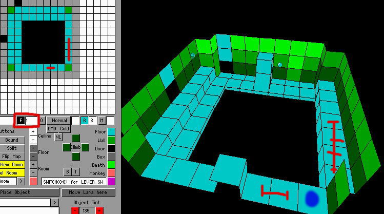
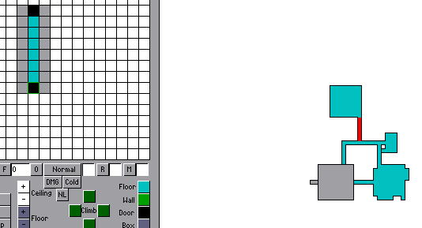
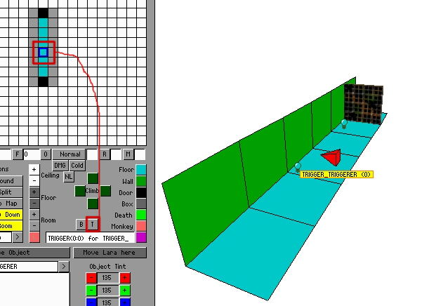
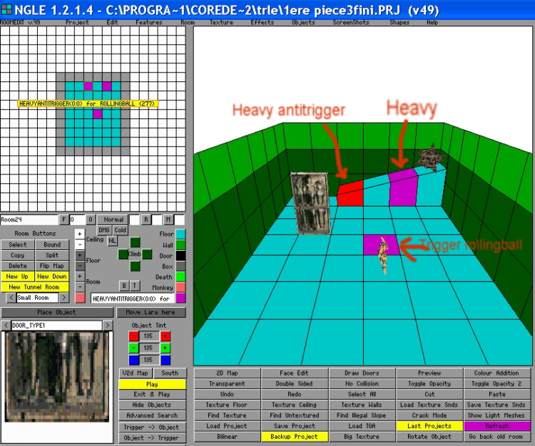
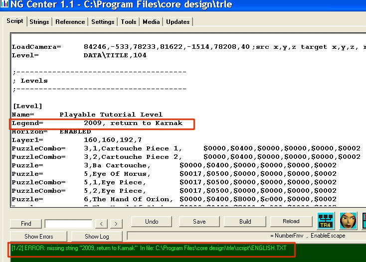

Qui n'a jamais entendu parler de Lara Croft, l'héroïne de la saga Tomb Raider ? Je me propose de vous apprendre à créer vos propres niveaux avec la belle Lara, de construire vos pièces, vos pièges, vos énigmes, de placer vos méchants, vos textures... Beaucoup de sites sont spécialisés dans ce sujet et fournissent une multitude de logiciels d'aide à la construction d'objets, de wads (tiens, c'est quoi cette bête-là :D ?), de textures, etc.
N'est-ce pas trop difficile ?
Pas du tout ! Il faut juste de la patience et les bases nécessaires, que je vais vous apprendre dans ce cours.
Téléchargement de l'éditeur, installation et test des niveaux présents
Commençons donc par télécharger l'éditeur de niveaux officiel, ou plus exactement le dossier complet (trle) contenant le dit éditeur. Celui-ci sera en anglais, mais pas d'inquiétude : on s'y habitue très rapidement.
Vous pouvez le télécharger sur plusieurs sites, mais tant qu'à faire, autant le télécharger sur des sites francophones ! Alors ici, téléchargez bien L'ÉDITEUR DE NIVEAUX OFFICIEL TOMB RAIDER qui fait 184 Mo environ. Vous aurez juste à dézipper et à lancer le setup pour installer l'éditeur.
Ou bien ici, vous aurez le choix entre un fichier editor.zip de 176 Mo qui sera un fichier ISO à graver sur un CD pour lancer le setup, et un fichier trle.exe de 120 Mo pour lequel il suffira de lancer l'exécutable pour installer l'éditeur. Pour ce second choix (trle.exe), vous ferez attention d'attendre à la fin de l'installation que les fichiers MP3 se transforment en WAV. (C'est l'affaire de 1 à 2 mn.)
Je signale aux possesseurs de Vista qu'un dossier trle est disponible là, mais n'ayant pas (encore) Vista, je n'aborderai pas le sujet.
Vous avez téléchargé votre fichier, il ne reste plus qu'à l'installer. Laissez-le s'installer dans son dossier par défaut qui doit être C:\Program Files\core design rle. C'est dans ce dossier que se trouve tout ce dont vous avez besoin pour vous amuser. :lol: Pour ceux qui ne suivent pas, je leur rappelle que s'ils ont choisi d'installer avec l'exécutable, ils doivent patienter jusqu'à la fin de l'installation afin de laisser le temps aux audio MP3 de se transformer en WAV (1 à 2 min). Après l'installation, ouvrez donc le dossier TRLE comme Tomb Raider Level Editor. Vous allez y trouver plusieurs dossiers et fichiers que je vais lister et détailler.
Dossiers
audio : c'est là que se trouvent toutes les musiques. Elles sont au format WAV.
graphics\wads : dans ce dossier, vous vous apercevez qu'il y a plusieurs fichiers qui portent le même nom (exemple : tut1.tom, tut1.was, tut1.wad, tut1.sfx...) ; ce sont les fichiers spécifiques à un niveau.
data : ce sont tous les fichiers des jeux. Vous trouverez donc le niveau que vous aurez créé et qui aura été converti en fichier jouable (.tr4).
logo : quelques fichiers vous permettant de créer le uklogo.pak, une petite image au chargement du jeu.
maps : dans ce dossier se trouvent toutes les maps des niveaux présents, gracieusement fournis par Eidos.
sound : comme son nom l'indique, ici se trouvent tous les sons que vous entendrez dans les niveaux (ennemis, Lara, portes, pièges, etc.).
script : c'est là que vous pourrez opérer des changements sur les noms d'objets, l'horizon, la légende, le nom du niveau... Dans ce dossier, vous avez également tous les scripts originaux dans plusieurs langues.
Correctif : il est obligatoire de se servir de Ngcenter pour les scripts. (Nous l'installerons un peu plus loin.)
Fichiers
tomb4 : moteur principal du jeu.
setup tomb4 : s'il n'y a pas de setup dans votre dossier, nous en créerons un, car il est souvent utile de rentrer dans le setup pour mettre les paramètres de configuration de votre matériel.
script.dat, french.dat ou english.dat : scripts nécessaires au jeu pour démarrer.
load.bmp : image de chargement.
tom2pc : convertisseur en fichier jouable de votre niveau (.tr4).
winroomedit : eh oui, je le mets en dernier... l'éditeur de niveaux que vous attendiez tous ! Éditeur dont nous ne nous servirons pas ( :D ), car nous allons en télécharger tout de suite un nouveau.
En fait, il faut savoir que l'éditeur original (winroomedit) a été prévu pour des machines aux processeurs beaucoup moins rapides que les actuels. Pour pouvoir travailler correctement, il faudrait donc ralentir le processeur. Il existe un petit logiciel, Bremse, qui fait ça, mais maintenant nous avons beaucoup mieux. :p
Un fan comme nous de Lara Croft, un pro de la programmation, je le cite car il est formidable (Paolone) nous a programmé un nouvel éditeur, NGLE, comme Next Generation Level Editor, avec quelques nouvelles fonctions. Et surtout, terminés les zooms et les rotations ultra rapides des pièces, ainsi que tous les autres petits inconvénients de winroomedit.
Téléchargement et installation du nouvel éditeur
Nous allons donc télécharger ce nouvel éditeur ici.
Téléchargez MK2 - TRNG Full Setup qui se trouve dans la partie Download TRNG Tools.
Après téléchargement, lancez-le, acceptez l'installation de NG_Center, et passez pour Wadmerger, vérifiez avec le bouton folders que le dossier trle se trouve bien dans le bon chemin et lancez l'installation. Cliquez sur le gros bouton vert Install, et dans votre dossier trle, le nouvel éditeur NGLE sera installé avec le nouveau convertisseur ng_Tom2pc, le nouveau tomb4.exe ainsi que les dll tomb_nextgeneration.dll et NgCenter.
À propos des dll, celles qui sont installées ont été mises à jour depuis, téléchargez la mise à jour (Trng update 1.2.0.3 aujourd'hui), et installez-la, cela se fait automatiquement en cliquant sur UPDATE.
Bien, cela étant fait, vous avez dû remarquer un message sur le langage qui avait un format ASCII irrégulier. Je ne vais pas vous expliquer ce que c'est mais je vais vous proposer de remédier à ce problème.
Au début de l'éditeur, nous faisions nos changements de scripts (script.txt, english.txt, french.txt) manuellement, mais Paolone a réalisé un programme qui regroupe tous ces scripts (Ngcenter). Je ne vous donnerai pas d'autres détails sur les scripts, nous y reviendrons plus tard.
Lancez donc Ngcenter.exe, qui doit se trouver dans C:\Program Files\Ngcenter, ou bien Démarrer > Tous les programmes, et Ngcenter ; indiquez-lui le chemin de trle : C:\Program Files\Core Design rle, cliquez sur le bouton Tools puis sur Convert texts to new format. Répondez oui à toutes les questions. Voilà, vous n'aurez plus ce message sur le langage ASCII.
Si ça vous tente, vous pouvez jeter un œil sur les différents menus, mais je ne vous en parlerai pas pour le moment.
Maintenant que tout est prêt, nous allons tester les niveaux présents dans le dossier TRLE.
Mais pourquoi ?
Tout simplement parce que vous devrez souvent tester le niveau que vous êtes en train de construire, et je vais vous donner quelques indications sur le moteur du jeu (tomb4.exe).
Création du setup et réglages
Tout d'abord, pour ceux qui n'ont pas de setup dans leur dossier, nous allons en créer un. Faites un clic droit sur le tomb4.exe et cliquez sur Créer un raccourci : vous avez un raccourci du tomb4 dans votre dossier trle. Cliquez-droit sur le raccourci et allez dans Propriétés ; dans la cible, ajoutez -setup au bout, vous devez avoir ceci : C:\Program Files\Core Design rle omb4.exe" -setup. N'oubliez pas l'espace avant la barre, cliquez sur Appliquer et Ok. Vous pouvez renommer ce fichier en setup.
Lancez donc en premier le setup et vous devriez voir apparaître cette fenêtre :
En haut , vous voyez la carte graphique de votre ordi.
En dessous, les paramètres d'affichage avec l'accélération 3D de Microsoft.
En dessous, la résolution que vous pouvez changer (plus c'est élevé, plus c'est beau :lol: ).
Encore en dessous, le texturage que j'ai mis en 32 bits.
Et sur la dernière ligne, mettez votre carte son si vous en avez une.
Pour l'instant, laissez la fenêtre « Options de rendu ».
Cliquez sur Ok et une petite fenêtre vous indique que la nouvelle configuration a été changée avec succès.
Lancement du jeu
Lancez le Tomb4.exe, et tout de suite s'affiche l'écran-titre.
En haut, vous voyez s'afficher TOMB RAIDER : c'est ce qu'on appelle le logo, et si vous avez bien suivi, vous savez que je vous ai rapidement parlé un peu plus haut d'un dossier logo, dans lequel vous avez tout le nécessaire pour modifier ce logo, ou encore plus simplement en utilisant TRCustomScreen, dont j'explique le maniement très simple dans le chapître Logiciels.
Plus bas, vous pouvez lancer une partie, charger une partie, aller dans les options ou quitter.
Allons tout de suite jeter un œil dans les Options.
Pour naviguer dans le menu, servez-vous des flèches directionnelles, et validez par Entrée ou Ctrl. Dans le menu Options, en 1er, vous avez le tableau de configuration des commandes, principalement tous les mouvements de Lara ; appuyez sur Entrée pour y avoir accès et visualisez-les, notez-les sur un papier si besoin mais ne changez rien, on s'y habitue très rapidement.
Sortez en appuyant sur Echap.
Ensuite, vous avez le volume musical et les effets sonores ainsi que la qualité sonore, vous pouvez jouer sur le curseur avec les flèches directionnelles gauche, droite.
Et en dernier, vous avez la visée : si elle n'est pas en automatique, réglez-la avec les flèches directionnelles gauche ou droite, ce qui permettra à Lara, lorsqu'elle aura une arme en mains, de viser automatiquement sur les ennemis.
Revenez au menu principal et appuyez sur « Nouvelle partie », une liste de niveaux s'affiche : ce sont des parties de niveaux de la saga Tomb Raider : La Révélation finale, auxquels vous pouvez jouer pour vous habituer aux touches.
Dedans, il y a le didacticiel jouable ; vous pouvez y jouer car lorsque le cours sur l'éditeur commencera, nous nous servirons des wads de ce niveau et vous n'y aurez plus accès. Enfin, ne vous inquiétez pas, on peut le restaurer à tout moment.
Pour sortir du jeu, appuyez sur P, puis « Quitter », Echap et « Quitter ».
Et maintenant, commençons à nous servir de l'éditeur (vous êtes là pour ça, non ? :D ).
Nous allons maintenant débuter le cours. Ouvrons donc le dossier trle et lançons l'éditeur de niveaux, NGLE. Une petite fenêtre vous demandant de charger l'autosave s'ouvre. Cliquez sur Annuler.
La capture d'écran vous montre les principales sections. Remarquez les directions un peu étranges (ouest en haut, etc.). Ce sont les directions qu'aura Lara dans le jeu.
1 Plan view panel, vue du dessus de la pièce sélectionnée, c'est également dans cette partie que vous définirez la taille de la pièce.
2 Room edit buttons, boutons d'édition de la pièce (création, effacement, triggers, flipmap...).
3 Objects panel, panneau des objets (aperçu, coloration, sélection...).
4 Lighting panel, panneau des lumières (sélection, placement et ajustement des différentes lumières...).
5 Editor window panel, disons que c'est le principal panneau de l'éditeur, c'est là que vous passerez le plus de temps.
6 Editor window buttons, quelques boutons d'aide à la construction.
7 Room info box, infos sur la pièce sélectionnée, taille, nombre de déclencheurs (triggers), nombre d'objets.
8 Color palette, différentes couleurs très pratiques, notamment pour les éclairages.
9 Texture panel, toute la gamme de textures dont vous avez besoin pour texturer vos pièces.
Nous allons donc commencer par construire une pièce. Avant, il nous faut charger les textures et les objets.
Commençons par les textures : cliquez sur le bouton Load TGA situé dans le Editor window buttons, recherchez le dossier maps situé dans votre dossier trle, puis ouvrez le dossier tut1. Sélectionnez tut1text.tga et ouvrez-le. Vous voyez apparaître vos textures dans le texture panel, ce sont des textures égyptiennes (Lara Croft s'est souvent aventurée en Egypte :D ).
Maintenant, chargeons les objets. Cliquez sur Objects dans le menu déroulant du haut puis sur Load Objects. Toujours dans le dossier trle, ouvrez les dossiers graphics puis wads, et sélectionnez le tut1.was. Chargez-le. Vous voyez apparaître les objets dans le Object panel. Une petite fenêtre vous indiquant que les objets sont chargés s'ouvre ; cliquez sur ok.
Le premier objet que vous pouvez voir est LARA. C'est normal : elle est l'héroïne principale du jeu. :p
En cliquant sur la petite fenêtre où LARA est écrit, vous aurez accès à tous les objets contenus dans ce wad. Vous pouvez les visualiser un par un, les faire tourner en maintenant le clic gauche enfoncé, ou les rapprocher ou éloigner avec clic droit + majuscule.
Seul le premier objet, LARA, est à placer dans le jeu. Les autres objets concernant LARA (lara skin, pistol anim, (...), jusqu'à hair) sont d'office incorporés à Lara. Ce sont ses animations particulières, son apparence physique dans le jeu ; vous n'aurez pas à les y placer.
Vous pouvez découvrir tous les ennemis de LARA, les pièges, ainsi que les différentes fournitures qui composent ce wad.
Vue de l'éditeur avec les textures et les objets chargés
Construction de la première pièce
Vous pouvez voir cette pièce dans le editor window panel. Elle fait 18 x 18 carreaux et est visible en 3D. Pour la voir en 2D, cliquez sur le bouton 2D Map situé dans le editor window buttons. Vous remarquerez qu'elle se situe en haut à gauche. Pour la déplacer, faites un clic droit dessus et déplacez-la sans relâcher le bouton. Vous pouvez la placer à n'importe quel endroit sur la map.
Revenez en 3D et effectuez une rotation et un zoom de cette pièce (flèches directionnelles et Pg Prec - Pg Suiv en maintenant la touche majuscule enfoncée).
Petite information: avec l'ancien éditeur, votre pièce aurait effectué une rotation ou un zoom très rapide fort désagréable.
Revenons à nos moutons :D . Cette pièce de 18 x 18 carreaux est la plus grande que vous puissiez réaliser. Mais c'est une trop grande pièce, car si dans votre futur niveau vous ajoutez plusieurs pièces de cette dimension, vous aurez très rapidement des contraintes de mémoire et le jeu crashera.
Plusieurs points négatifs justifient de réduire ces grandes pièces. La principale bien sûr est la mémoire, mais vous verrez qu'il est beaucoup plus simple de texturer de plus petites pièces.
Oui, mais comment peut-on réduire les pièces ?
C'est d'une simplicité enfantine ! Dans le plan view panel en haut à gauche de l'éditeur, vous avez votre pièce de 18 x 18 carreaux ; faites un clic droit dans le premier carreau bleu en haut à gauche de cette fenêtre et tout en le maintenant enfoncé, délimitez le nombre de carreaux de votre pièce (par exemple, 9 x 9 carreaux).
Votre pièce est délimitée par un trait rouge, il ne vous reste plus qu'à cliquer sur le bouton bound (situé un peu plus bas), votre pièce est retaillée. :o
Faisons 2 ou 3 aménagements de cette pièce toute nue, faites un clic droit sur un carreau du sol de votre pièce pour le sélectionner, vous pouvez le monter ou descendre de 2 manières :
soit avec les touches A et Q pour le sol, et Z et S pour le plafond ;
soit en cliquant sur + ou - dans le room edit buttons (Floor = sol et Ceiling = plafond).
Je préfère la première solution. :D
Donc montez ce carreau de 4 clics, ensuite sélectionnez un autre carreau et cliquez sur wall (bouton vert dans le room edit buttons), votre carreau monte jusqu'au plafond (c'est en quelque sorte un pilier).
Vous avez dû remarquer qu'en faisant un clic gauche sur un carreau, quelquefois vous aviez une flèche qui changeait de direction à chaque clic gauche. ce qui veut dire que vous pouvez monter ce bloc dans la direction de la flèche. Vous pouvez monter également les angles, il suffit d'appuyer sur CTRL + clic gauche et la flèche se positionne dans un angle. Quand vous montez un angle, l'angle opposé reste plat, faites Alt + clic gauche pour changer le sens de la diagonale ; cette fonction est intéressante pour construire les angles d'une pyramide, par exemple.
Maintenant nous allons abaisser le plafond, car celui ci est très haut, on ne se rend pas compte ici mais quand nous serons dans cette pièce dans le jeu, c'est assez haut.
Regardez dans la room box info, la hauteur de votre pièce (Floor = sol, Ceiling = plafond) qui doit être à 0 au niveau du sol et à 20 clics de hauteur de plafond. Sélectionnez (clic droit maintenu enfoncé) tout le sol ; eh oui, en sélectionnant le sol, vous sélectionnez également le plafond ; ensuite, cliquez sur S de manière à ce que votre pièce ne fasse plus que 12 clics de haut. Amusez-vous à faire des changements dans cette pièce, sachez que vous pouvez supprimer cette pièce en allant dans le menu Room en haut de l'éditeur (fonction delete).
Quand est-ce que l'on peut tester ?
Bientôt, on pourrait bien sûr tester, mais vous seriez dans une pièce toute noire et pas jolie, il faut la texturer pour en voir les limites, ce que nous allons voir tout de suite.
Bon : avant toute chose, pour repartir sur des bases communes, vous et moi, et pour mieux nous comprendre, nous allons faire la même pièce. :D Supprimez votre pièce (menu room en haut de l'éditeur, fonction delete), et faites une nouvelle pièce de 9 x 9 carreaux avec un plafond à 12 clics de hauteur.
Dans chaque coin de cette pièce, faites un pilier (bouton wall) ; ensuite sélectionnez (clic droit enfoncé) le pourtour entre chaque pilier hormis le pourtour ouest (haut de l'éditeur) et montez le de 4 clics (touche A).
Vous devriez avoir ça :

À ce stade on pourrait peut-être sauvegarder notre chef-d'œuvre. :lol: Cliquez sur le bouton Save project dans le editor window buttons (vous pouvez également le faire en passant par le menu du haut ), donnez un nom à votre projet, genre "1re pièce" et sauvegardez. Normalement, votre projet est sauvé dans le dossier trle (vous pouvez y jeter un œil).
Texturage
Ce qui fait toute la beauté d'un niveau, c'est surtout le texturage, je vais vous en apprendre les fondamentaux. En faisant un clic gauche sur le panneau de texture, vous sélectionnez une texture de 64 x 64 pixels. Vous avez remarqué que le sol et le plafond de votre pièce sont quadrillés : ce sont des carreaux où vous pouvez appliquer votre texture de 64 x 64 pixels.
Sélectionnez donc une texture qui pourrait aller au sol et cliquez sur un carreau du sol de votre pièce, la texture est appliquée. Répétez l'opération sur tout le sol ou cliquez sur Texture Floor (tout le sol est texturé en 1 clic). :euh:
Choisissez également une texture pour le plafond et texturez-le (ou bouton Texture Ceiling) ; servez-vous des flèches directionnelles + Maj gauche pour bien positionner votre pièce.
J'ai gardé pour la fin les murs car c'est un peu plus délicat (enfin, rien de terrible, je vous rassure :lol: ). Les murs ne sont pas quadrillés, c'est à nous de le faire manuellement. Je vous ai dit que les textures faisaient 64 x 64 pixels, ce format correspond à 4 clics, nous allons donc "découper" notre mur en multiple de 4 clics (tiens, je vous avais demandé de baisser le plafond à 12 clics), nous allons donc découper le mur ouest en 3, et les 3 autres vu que le pourtour est monté de 4 clics en 2.
Revenez en mode non texturé (en cliquant sur Face Edit), sélectionnez avec le clic droit un pan du mur ouest, vous pouvez également sélectionner tout le côté de mur en maintenant enfoncé le clic droit (non compris les piliers à chaque angle, nous les ferons après).
En appuyant sur A, montez une ligne de 4 clics, puis descendez une ligne de 4 clics en appuyant sur S. Pour les 3 autres murs, descendez simplement la ligne du plafond (touche S). Vous avez maintenant quadrillé tous vos murs, répétez la même opération pour les 4 piliers. Maintenant nous pouvons texturer les murs et les piliers.
Quelques astuces
Rajout de lignes supplémentaires sur vos murs > appuyez sur E ou D, R ou F.
Permutation des textures > appuyez sur Ctrl et faites un clic gauche.
Faire tourner la texture en faisant un clic droit.
Ne prendre qu'une partie de texture > maintenez le clic droit sur une texture et délimitez la partie que vous voulez.
Vous devriez obtenir ça avant et après texturage (le texturage ne sera peut-être pas comme le mien, c'est votre choix ;) ).
Avant texturage
Après texturage Avec le bouton Preview, vous pouvez visualiser votre pièce à l'aide de la souris, mais disons que ce n'est pas très pratique.
Bon : dites, maintenant il serait peut être temps de tester notre chef-d'œuvre. :D
Nous arrivons enfin au test de la pièce, c'est un test que vous serez amenés à faire le plus souvent possible, il ne faudra pas attendre d'avoir fait plusieurs pièces, mis plusieurs objets ou fait des transformations pour tester. Mais testez le plus souvent possible, il sera plus facile de trouver la cause d'un problème.
Bon ! En premier lieu, il convient de mettre notre héroïne dans cette pièce, car c'est un objet (hooooo je dis de Lara que c'est un objet, honte sur moi :lol: ) incontournable ; si on l'oubliait, ça crasherait inévitablement.
Dans un premier temps, mettez-vous en non texturage (bouton Face Edit), c'est plus facile de placer les objets. Cliquez ensuite dans la fenêtre d'objets, et sélectionnez Lara, cliquez sur Place Object et cliquez sur une case de votre pièce : voilà, votre Lara est placée. Vous pouvez la déplacer après l'avoir sélectionnée, avec les touches fléchées + Ctrl gauche, ou la faire tourner avec le bouton Rotate Object, ceci est bien sûr valable pour tous les objets que vous placerez.
Sauvegardez votre projet.
Ensuite cliquez sur Project dans le menu du haut, puis sur Output Wad, sélectionnez tut1.tom, enregistrez, répondez « Oui » à la question.
Vous ne pouvez pas encore jouer à votre niveau (je dis niveau alors qu'il n'y a qu'une seule pièce :D ), il faut convertir le tut1.tom que vous venez d'enregistrer. Dans le dossier trle lancez Ng_Tom2pc (c'est le convertisseur), cliquez sur Add, sélectionnez tut1.tom et cliquez sur Build All, vous voyez votre niveau se convertir avec plein d'informations.
Lorsque Build All Complete apparaît, votre niveau est converti, fermez NGtom2pc, nous pouvons passer au test. Lancez le tomb4.exe ou passez par le setup, et lancez le didacticiel jouable, ou en anglais le playable tutorial level.
Voilà : vous promenez Lara dans votre pièce, elle est magnifique, peut-être voyez vous des défauts dans la pose des textures ; normal, Paris ne s'est pas fait en un jour. :lol: Vous corrigerez au retour dans l'éditeur.
Bon, ce n'est pas le tout mais ma pièce, j'en ai fait le tour et je la trouve plutôt claire, comment cela se fait-il ?
Exact : dans le prochain article, nous allons apprendre les techniques d'éclairage. :)
Effectivement, cette pièce est plutôt claire, on va corriger ça et je vais vous expliquer comment. ;)
Revenez dans l'éditeur avec votre pièce qui vous attend. :D
Tout ce qui concerne l'éclairage se trouve en bas à gauche : cliquez sur Lighting, ensuite nous allons baisser l'éclairage en cliquant sur les - des 3 couleurs au-dessus de Ambience, descendez jusqu'à 48 pour les 3 couleurs ; déjà, vous voyez que votre pièce s'est assombrie.
Avec le clic droit vous descendez ou montez par tranche de 16 (très pratique).
Bien sûr, vous pouvez tester cette transformation : je récapitule > Output Wad, conversion avec ngTom2pc, et test.
Vous verrez que c'est déjà plus sombre, mais nous allons encore améliorer.
Nous allons placer un Sun dans cette pièce.
Cliquez sur Face Edit pour revenir en mode non texturé (c'est plus facile pour placer un objet,je vous l'ai déjà dit :p ), cliquez sur Sun et placez-le plutôt dans un angle, sélectionnez-le, ensuite cliquez sur Show Light Meshes pour voir la direction de son faisceau.
Bien, cliquez sur Lighting et vous voyez bien le faisceau blanc du Sun qui éclaire certainement n'importe où, nous allons le diriger de manière à ce qu'il éclaire plutôt vers le milieu de la pièce. Avec les touches A ou Q , montez un peu votre Sun vers le plafond, (vous pouvez le déplacer latéralement comme Lara avec les touches fléchées + Ctrl gauche enfoncé) ensuite avec les boutons X et Y, dirigez votre Sun vers le centre de la pièce, de manière à ce qu'il éclaire une bonne partie de la pièce. Vous avez réussi, parfait ! Maintenant, on va changer la couleur de ce Sun, parce que blanc ce n'est pas terrible dans cette pièce égyptienne. :D
Le Sun étant toujours sélectionné, faites un clic droit sur une couleur de la Color palette : vous pouvez essayer plusieurs couleurs, pour voir l'effet rendu. Je pense qu'une couleur dans les orange un peu foncé serait pas mal.
Alors maintenant, vous pouvez tester dans le jeu. Je ne vous indique plus comment faire. :p
Nous pouvons rajouter un Light ou deux dans cette pièce pour améliorer encore l'ambiance, je vais vous en indiquer le moyen.
Revenez en mode non texturé et cliquez sur Light, placez-le dans un angle ou où vous voulez :D , sélectionnez-le et cliquez sur Lighting, montez-le un peu en hauteur. Avec les boutons In et Out, réglez son faisceau ainsi que son intensité avec le bouton Int, faites maintenant un clic droit sur l'une des couleurs de la Color palette, jusqu'à trouver la bonne couleur.
Si vous voulez placer un deuxième Light, répétez les mêmes opérations.
Je vais vous parler maintenant des autres objets d'éclairage (Spot, Shadow et Effect).
Le Spot sert comme un spot :lol: à éclairer dans une seule direction.
Le Shadow sert à faire des zones d'ombre.
L'Effect sert à éclairer le carreau au-dessus duquel il est placé (par défaut son intensité est à 0, à vous de l'augmenter pour voir l'effet).
Vous pouvez essayer ces différents éclairages et les tester, bien sûr.
Pouvons-nous encore améliorer l'éclairage de cette pièce ?
Je réponds oui et je vais vous le montrer, nous en profiterons pour placer les premiers triggers (déclencheurs). ;)
Allez dans les objets de l'éditeur chercher l'Animating2, c'est un porte-torche à placer sur un pilier, placez-en un sur chaque pilier à mi-hauteur de celui-ci. Pour cela utilisez toujours les touches A ou Q pour monter, Ctrl gauche + touches fléchées pour le déplacer, et le bouton Rotate Object.
Ensuite cherchez le Flame_Emitter2 et placez-en un sur chaque porte-torche (base du cône dirigé vers le pilier) ; si vous n'arrivez pas à bien le placer, vous le verrez quand vous jouerez et le replacerez en conséquence.
Seulement ces Flame_Emitter2 ne vont pas s'enflammer toutes seules, il va falloir leur indiquer, c'est ce que l'on va faire en les déclenchant.
Très simple : sélectionnez un Flame_Emitter2, faites un clic droit sur un carreau (par exemple le carreau juste devant Lara), ensuite cliquez sur le bouton rose situé dans le RoomEditButtons (c'est le bouton situé juste en dessous du bouton orange monkey). Le carreau devant Lara se met en rose.
Vous venez de placer votre premier Trigger (c'est ce que j'appelle un trigger simple), il ne vous reste plus qu'à faire la même chose pour les 3 autres flame emitter2, vous pouvez les trigger sur le même carreau devant Lara.
Alors pourquoi devant Lara ? Eh bien quand elle passera sur ce carreau, les Flame_Emitter2 vont s'allumer.
Maintenant vous pouvez tester votre pièce. Faites passer Lara sur ce carreau pour voir les flame_Emitter2 s'allumer. :D
Voilà : j'en ai terminé avec cette partie éclairage ; dans le prochain chapitre, nous verrons comment rajouter des pièces et les connecter.
Nous allons maintenant apprendre à connecter des pièces qui se situent au même niveau vis-à-vis du sol. Mettons-nous en 2D map.
Déplacez votre première pièce au milieu de la map (clic droit maintenu) et amenez la pièce vers le milieu de la map. Ce sera plus simple pour connecter les pièces : nous aurons plus d'espace.
Dans RoomEditButtons, cliquez sur Select puis sur la seconde pièce vide (empty). Vous avez une nouvelle grande pièce de 18 x 18 carreaux, pièce que l'on va retailler en une pièce de 6 x 1 carreaux. Répétez la manoeuvre (ce sera la dernière fois :p ), faites un clic droit sur le premier carreau bleu en haut à gauche du PlanViewPanel, descendez de 6 clics et cliquez sur Bound. Voilà votre nouvelle pièce ! Sélectionnez le plafond et descendez-le de manière à ce que la pièce fasse 4 clics de hauteur (vérifiez dans la RoomInfoBox).
Nous allons donc connecter cette pièce sur la première, côté mur ouest (voir screen), déplacez votre pièce et amenez-la bord à bord avec votre première pièce.
Sélectionnez le carreau gris (on va l'appeler la cloison, par exemple) dans le PlanViewPanel qui est bord à bord avec la première pièce, et cliquez sur le bouton noir Door, comme porte. :lol:
Vous venez de vous connecter à la première pièce et c'est d'ailleurs celle-ci qui est maintenant sélectionnée. Revenez en 3D, et cliquez sur Draw Doors, en faisant tourner votre map, vous apercevez votre deuxième pièce connectée.
Bien, texturez cette deuxième pièce en vous mettant en Face Edit, mettez l'éclairage puis revenez dans la première pièce. Vous vous rendez compte que le mur au-dessus de la connexion est mal texturé. En effet au moment de la connexion les lignes de texturage se sont disjointes, vous devez redescendre une ligne du plafond avec les touches R ou F, puis retexturer proprement.
Nous allons créer un nouvelle pièce de 1 x 8 carreaux, de 4 clics de hauteur et de niveau sol à zéro, que nous allons connecter à notre deuxième pièce en perpendiculaire.
Texturez-la et mettez l'éclairage.
Pour la prochaine pièce nous allons utiliser la fonction Copy pour gagner du temps ; sélectionnez la deuxième pièce, puis dans le PlanviewPanel, sélectionnez tout le sol (ou le plafond) et cliquez sur le bouton Copy, votre nouvelle pièce est créée.
Connectez-la en perpendiculaire à la pièce précedente, ou si vous préférez en parallèle à votre deuxième pièce (voir screen plus bas). Vous avez remarqué qu'en copiant cette pièce, elle est texturée, d'où un gain de temps appréciable avec cette fonction. Il vous faut juste peaufiner l'éclairage.
Pour la pièce suivante nous allons procéder de la même manière : sélectionnez votre première pièce, sélectionnez tout le sol puis cliquez sur Copy, montez les carrés sur 3 côtés de 4 clics.
Vue de cette pièce avec les 3 côtés montés de 4 clics Reliez-la à votre précédent couloir, corrigez les textures disjointes et mettez l'éclairage.
Il nous reste à faire une pièce pour relier le tout à la première pièce, sélectionnez-en une nouvelle, fonction select, et créez-en une de 1 x 5 carreaux, mettez son plafond à 8 clics de hauteur, connectez-la des 2 côtés, texturez-la et réglez l'éclairage.
Vous pouvez tester et vérifier les textures.
Murs fins
Qu'est-ce qu'un mur fin ? Vous allez comprendre très rapidement, lorsque vous connectez 2 pièces de plus de 1 carré de large, vous aurez ce mur fin, très inesthétique ; le remède à ce problème est de faire par exemple un pilier d'un côté ou de l'autre. Vous pouvez tester en créant 2 pièces de 5 x 5 carreaux, par exemple, et de les connecter juste sur un carré.
Vous voyez sur le screen de gauche ce mur fin entre les 2 pièces, et sur celui de droite lorsque l'on dresse les piliers (bouton wall).
Connexions de pièces sur un côté d' une hauteur différente
Ce que j'entends par là, c'est que vous pouvez connecter des pièces sur le côté d'une autre sans être au même niveau de sol.
Un exemple, rapidement : créez une pièce de 1 x 2 carreaux, de 4 clics de hauteur. Élevez-la de 4 clics, de sorte que son niveau sol soit à 4 clics et le plafond à 8 clics, connectez-la sur l'un des côtés de votre première pièce.
Texturez-la et posez l'éclairage. Sauvegardez votre projet et testez.
Vous pouvez vous amuser à créer des pièces à différents endroits, rien de mieux que la pratique, et tester vos nouveautés. Je vous demanderai juste de garder votre projet intact, que nous soyons en phase pour la suite du cours.
J'appelle connexions de pièces à des niveaux différents, des pièces que l'on va empiler les unes sur les autres. Par exemple, votre première pièce est au niveau du sol à zéro (regardez dans RoomInfoBox), nous allons lui connecter par-dessus une pièce qui a un niveau sol à 12 clics.
Alors pourquoi 12 clics ?
Très simple : votre première pièce a un plafond qui se trouve à 12 clics au-dessus du sol, donc il est normal que la pièce que vous allez connecter par-dessus se trouve avec un niveau sol à 12 clics. Voilà : j'espère que c'est clair. :-°
Par la pratique c'est d'une simplicité enfantine.
Bon, allons-y : Select, créez une nouvelle pièce de 9 x 9 carreaux, et de 12 clics de haut. Élevez la rangée du milieu de 4 clics et la rangée perpendiculaire également de manière à faire une croix. Montez les 4 carrés d'angle de 4 clics.
Dans ce nouvel éditeur il existe un bouton merveilleux qui quadrille les murs en 1 clic, cliquez sur Shapes dans le menu du haut puis sur Grid all walls, et voilà tous vos murs sont quadrillés. ;)
Bien sûr, vous pouvez créer des pièces avec d'autres dimensions, mais pour le moment on va s'en tenir à une pièce identique à la première.
Cette pièce est à zéro, on va donc l'élever de manière à ce qu'elle se trouve à 12 clics de hauteur. Dans RoomEditButtons, cliquez sur le + à côté de Room pour monter toute votre pièce afin que son sol soit à 12 clics (jetez un œil dans la RoomInfoBox).
Ceci étant fait, mettez-vous en 2D et amenez votre pièce juste au-dessus de votre première pièce, sélectionnez tout le sol avec le clic droit et cliquez sur door.
Voilà ce que ça donne après la connexion :
Pareil que pour les autres pièces > texturage , éclairage. :lol:
Je vais vous apprendre à fabriquer des pièces d'eau où Lara évoluera comme un poisson dans... l'eau. :D
Je vous mettrai plusieurs screens de manière à ce que vous suiviez bien la manière de les fabriquer. Disons que ce n'est pas bien difficile mais il vaut mieux procéder dans l'ordre.
Création de la pièce d'eau
Tout d'abord, créez une pièce de 6 x 6 carreaux, baissez son plafond à 12 clics de haut. Ensuite descendez toute la pièce de manière à ce que son plafond se trouve au niveau zéro. Texturez-la (pas la peine de texturer le plafond).
Allez dans le RoomEditButtons, cliquez sur le bouton Normal et mettez sur Water ; à côté, cliquez sur le chiffre et mettez 3 par exemple, ce chiffre indique le mouvement de l'eau : plus le chiffre est grand (jusqu'à 4) plus le mouvement est important. Voilà : nous avons indiqué à l'éditeur que cette pièce est une pièce d'eau.
Amenez cette pièce sous la pièce et à l'emplacement indiqués par le screen, relâchez le clic droit.
Allez dans la pièce du dessus, sélectionnez exactement la surface de votre pièce du dessous (voir screen) et cliquez dans le RoomEditButtons sur le bouton noir nommé Door ; voilà, nous avons connecté cette pièce d'eau.
Retournez dans la pièce du dessus et montez les 2 côtés qui entourent la pièce d'eau d'un clic, le carreau fléché, montez-le comme indiqué en lui donnant une pente de 3 clics ; le carré derrière ce carreau penché, montez-le de 8 clics et celui à l'opposé de 4 clics (voir screen).
Texturage du portail
Ce n'est pas encore terminé, il va falloir maintenant mettre des textures d'eau sur le portail (ou connexion), et voilà comment on procède. Tout d'abord, mettez-vous en 3D, en Face Edit, cliquez sur les boutons Draw Doors, Transparent et Double Sided.
Dans le PlanViewPanel, cliquez avec le bouton gauche sur le portail que vous venez de faire, pit to room x doit s'inscrire et votre portail s'entourer d'un trait vert ; cliquez sur le bouton toogle opacity2, votre portail doit se quadriller en rouge ; sélectionnez une texture d'eau (voir screen) et appliquez cette texture sur les carreaux du portail. Vous pouvez appliquer les 8 textures d'eau, ce qui donnera des mouvements différents à l'eau.
Dès l'instant où vous en avez placé une, le portail perd sa couleur rouge, continuez quand même à appliquer vos textures.
Voilà : vous avez fait votre pièce d'eau, c'est un peu long à écrire mais beaucoup plus rapide à faire. Profitez-en aussi pour texturer les 2 bords de votre pièce d'eau que vous avez montés d'un clic.
Cliquez sur le R dans le RoomEditButtons, puis sur le chiffre à côté, il s'agit du bouton Réflexion : étant donné que vous avez une pièce d'eau, la réflexion de l'eau sera d'autant plus importante que le chiffre sera élevé.
Vous pouvez mettre une trousse de soins (bigmedi_item) dans le fond de cette pièce d'eau, Lara se fera un plaisir d'aller la chercher.
Vous pouvez maintenant mettre l'éclairage dans votre pièce d'eau, et ensuite aller tester cette piscine en faisant quelques brasses (ça rafraîchit). :D
Pour avoir un environnement extérieur, il vous faut un horizon et un ciel.
L'Horizon, vous l'avez dans vos objets, mais n'ayez crainte, vous n'avez pas à le placer dans votre level, il suffit simplement que la ligne HORIZON= ENABLED soit dans le script ; elle y est dans ce level, nous le vérifierons dans la partie qui traite de NGCenter.
Le ciel, c'est le fichier TUT1.raw, donc vous pouvez l'ouvrir avec un logiciel qui ouvre ce type de fichier (par exemple Xnview). Vous voyez que c'est un fichier qui fait 256 x 256 pixels ; vous n'avez pas à placer ce ciel non plus, nous allons voir comment il faut pratiquer. Créez une pièce de 8 x 8 carreaux, texturez le sol et les murs, et pour le plafond, sélectionnez la première couleur à gauche dans la Color palette (noire) et texturez tout le plafond avec cette couleur : vous voyez votre plafond se remplir d'une couleur transparente. Cliquez sur le O comme Outdoor dans le RoomEditButtons, placez Lara dans cette pièce et vous n'avez plus qu'à tester.
Dans le jeu, vous voyez un beau ciel bleu, sachez que vous pouvez changer ce ciel en créant une nouvelle image de 256 x 256 pixels, en la mettant à la place du TUT1.raw original.
Une des qualités de Lara est de s'accrocher au plafond et de pouvoir passer au-dessus de passages impraticables. Mais n'étant pas surhumaine, cela ne lui est pas possible partout, et heureusement. :D
C'est à nous de lui créer les endroits adéquats. Rendons-nous dans la pièce marquée en rouge sur le screen.
Sélectionnez la ligne entre les 2 blocs montés précédemment et cliquez sur le bouton orange nommé Monkey : la ligne sélectionnée se teinte en orange.
Cependant, Lara ne pourra traverser ! Elle pourra bien s'accrocher, mais tombera dès qu'elle se trouvera au-dessus de la piscine.
Mais pourquoi ?
En fait, il faut également marquer la ligne du Monkey swing dans la partie la plus basse, c'est-à-dire dans la piscine.
Repérez bien cette ligne et allez dans la pièce d'eau. Sélectionnez la ligne de passage du Monkey swing et cliquez sur le bouton orange. Voilà, Lara pourra traverser en s'accrochant au plafond. :p Vous pouvez agrémenter cette partie avec des textures d'échelle pour indiquer au joueur que Lara peut s'accrocher au plafond.
Nous allons créer un mur d'escalade dans la première pièce que vous avez faite.
Dans RoomEditButtons, vous avez 4 boutons verts entourant le mot Climb. Sélectionnez dans PlanViewPanel le carreau en face du pilier sur lequel vous voulez que Lara puisse grimper et cliquez sur l'un des 4 boutons verts selon la position du pilier. Vous voyez un petit trait vert s'inscrire dans le PlanViewPanel. En cas d'erreur, cliquez à nouveau sur le bouton vert pour annuler.
Comme pour les Monkeyswing, vous pouvez appliquer des textures d'échelle, afin d'indiquer au joueur qu'il peut grimper à cet endroit.
Je vais plutôt dire une pièce Flipmap ce sera peut-être plus clair. :D
Une pièce Flipmap, donc, est une pièce originale, qui a subi une ou plusieurs modifications sous l'effet d'une action voulue. En clair c'est une copie de pièce mais qui se trouve transformée, principalement par l'action d'un trigger.
Nous allons donc modifier dans un premier temps la pièce originale choisie, qui se trouve être celle où l'on a fait le Monkeyswing.
Mettez-vous en non texturage et montez les carrés marqués en rouge en mur (bouton vert Wall), c'est tout. Texturez au besoin.
Et pourquoi ? Eh bien je vais vous le dire :D : pour que Lara ne puisse pas aller sur le carré marqué d'un point bleu, car un peu plus loin dans le tutoriel nous mettrons un levier sur ce carré.
Maintenant, cette pièce originale on va la mettre en Flipmap.
Cliquez sur le bouton F dans la RoomEditButtons, l'EditorWindowPanel devient noir. Dans la case à côté, mettez 1 et validez en appuyant sur Entrée.
Maintenant nous allons transformer cette pièce.
Les 6 carreaux que vous aviez montés en mur (Wall), redescendez-les comme ils étaient en cliquant sur le bouton bleu appelé Floor(plancher), et corrigez-les au besoin en remontant le plafond. Le carré marqué d'un point bleu est maintenant accessible.
Il ne nous reste plus qu'à texturer à nouveau le portail avec la pièce d'eau, car celui-ci a perdu ses textures d'eau lors du flip.
Je répète brièvement la manœuvre.
Mettez-vous en 3D, Face Edit, Draw Doors, Transparent et Double Sided.
Sélectionnez le portail et cliquez sur Toggle Opacity 2, le portail se colore en rouge.
Appliquez vos textures d'eau sur tout le portail.

Lorsque dans le jeu, vous arriverez à cette pièce, vous n'aurez pas accès à ce carré (marqué d'un point bleu), il faudra déclencher la flipmap. Ce que nous allons programmer de suite.
Nous allons placer le trigger sur le bloc qui se trouve de l'autre côté de la piscine ; vous savez, celui que vous pouvez atteindre en empruntant le monkeyswing.
Revenez dans la pièce originale, en appuyant sur Alt+F. Vous pouvez d'ailleurs vérifier votre Flipmap en appuyant plusieurs fois sur ces touches.
Faites un clic droit sur ce carré et cliquez dans la petite fenêtre de trigger (à côté du bouton rose). Cliquez dans la fenêtre déroulante nommée Trigger et sélectionnez Flipmap ; ensuite, marquez 1 dans object to trigger, et validez en cliquant sur ok, cliquez sur le bouton rose. Voilà : quand Lara arrivera sur ce bloc, la Flipmap se déclenchera.
Pour l'instant, pas grand intérêt, cette Flipmap, mais un peu plus loin nous placerons un levier qui ouvrira une porte etc. etc. :D
Le bouton Box sert à isoler les ennemis, je m'explique : il peut arriver que vous ne vouliez pas qu'un ennemi aille à certains endroits où il risquerait de se coincer, par exemple.
En délimitant des zones avec ce bouton, l'ennemi ne pourra pas passer.
Nous allons prendre un exemple.
Créez une pièce de 8 x 8 carreaux, hauteur de plafond à 12 clics ; dans le menu Shapes, cliquez sur grid all walls.
Texturez cette pièce et revenez en mode non texturé, placez le BADDY 1 dans un coin de la pièce et le MUMMY dans un autre ; triggez-les simplement sur un carré et placez Lara sur ce carré par la fonction Move Lara here (clic droit sur un carré et cliquez sur Move Lara here).
Sélectionnez les carrés (voir screen) et cliquez sur Box, les carrés deviennent gris et infranchissables pour les ennemis. Vous pouvez modifier ces carrés avec une texture différente du sol.
Testez dans le jeu, et vous verrez que les ennemis ne franchissent pas cette zone.
Bouton Death
Le bouton Death sert - comme son nom l'indique - à marquer des carrés qui sont mortels pour Lara.
Vous pouvez créer des pièges avec ce bouton, en interdisant un passage, en créant des pièces d'eau hautement toxiques, etc.
Nous allons prendre un petit exemple dans votre projet en construisant une pièce de 9 x 8 carreaux : montez des petits plots d'un clic, comme indiqué sur le screen. Texturez-la.
Sélectionnez tous les carrés du sol qui sont en vert fluo (voir screen), sélectionnez-les un par un ou plus et cliquez sur le bouton Death : vos carrés se colorient en vert, gardez ceux qui restent en bleu.
Voilà : Lara devra aller sur le plot marqué d'un point rouge (pour ramasser une clé, un puzzle...) en passant par les plots bleus sans toucher aux carrés mortels.
Pour montrer que cette pièce est très chaude, vous pouvez rajouter des FLAME_EMITTER3 en les triggant sur le carré sur lequel se trouve Lara.
Voilà ! Nous avons réalisé une pièce très simple mais bien sûr, vous pouvez en faire de bien plus sophistiquées, plus belles.
Je ne vais pas vous parler du trigger simple, vous en avez déjà placé plusieurs pour la pose des FLAME_EMITTER ou des ennemis par exemple. Je ne vous parlerai pas ici du trigger Finish, mais dans le chapître sur les Lara_Start_Pos.
Nous allons voir le trigger Switch et vous verrez qu'il est déjà beaucoup plus intéressant. :D Nous allons dans un premier temps poser 3 portes dans la première pièce que vous avez faite.
Dans la liste d'objets, recherchez et sélectionnez la DOOR_TYPE4, placez-en une à chacune des ouvertures de cette pièce (voir screen).
Attention au sens de cette porte, car il y a un bloc de collision de la porte : si elle est placée dans le mauvais sens, Lara se cognera contre ce bloc et ce n'est pas très joli.
Pour bien la placer, repérez ce bloc, mais non, vous ne pouvez pas, il est invisible :p , mais si vous pouvez :D , ce bloc invisible est toujours dirigé vers le sud lorsque vous placez votre porte, donc pivotez votre porte avec le bouton Rotate Object et placez-la dans l'ouverture (Ctrl + flèches directionnelles).
Bon : vous avez positionné vos 3 portes, nous allons maintenant ouvrir celle qui est côté ouest.
Allez dans la pièce au-dessus et posez un LEVER_SWITCH au-milieu de la croix (voir screen).
Sélectionnez-le et faites un clic droit sur le carré sur lequel il se trouve ; cliquez dans la petite fenêtre à côté du bouton rose ; dans la fenêtre qui s'ouvre (STT), cherchez Switch dans le champ Type et validez par ok ; cliquez sur le bouton rose.
Il vous suffit maintenant de sélectionner la porte ouest et de la trigger simplement sur le carré du levier (sélection de la porte, clic droit sur le carré du levier et clic sur le bouton rose).
Voilà, dans le jeu il vous faudra grimper là-haut et manœuvrer le levier pour ouvrir la porte.
Dans votre fenêtre de trigger, vous avez dû voir le champ Timer.
Si vous mettez une valeur positive dans ce champ (par exemple 8), la porte ne s'ouvrira que pendant 8 secondes et se refermera.
Si vous mettez une valeur négative (par exemple -8), la porte ne s'ouvrira qu'au bout de 8 secondes.
Le trigger Switch est un trigger spécial.
Puisqu'on en est aux trigger Switch, nous allons en placer un sur le carré du trigger Flipmap dans la pièce Flipmap.
Placez un LEVER_SWITCH sur ce carré (voir screen), disposez-le en diagonale sinon vous ne pourrez pas le manœuvrer, sélectionnez-le, faites un clic droit sur ce carré, ouvrez la fenêtre des trigger, sélectionnez Switch dans le champ Type, cliquez sur ok et sur le bouton rose.
Vous vous rappelez qu'on avait mis un trigger simple sur ce carré pour la flipmap ? Eh bien le fait de placer un trigger switch, celui-ci devient le patron du carré et il faudra manœuvrer le levier pour déclencher la flipmap.
En bas à droite du screen, dans le renfoncement où Lara n'a pas accès, placez également un LEVER_SWITCH qui nous servira pour ouvrir la DOOR_TYPE4 qui se trouve dans le couloir, nous permettant de revenir à notre première pièce.
C'est un cas particulier: en effet comme ce levier sera manœuvré dans la pièce flippée, il va falloir trigger le LEVER_SWITCH et la DOOR_TYPE4 dans la pièce flippée. Sélectionnez le levier, appuyez sur Alt+F pour vous trouver dans la pièce flippée (Editor Window Panel devient noir), faites un clic droit sur le carré du levier (vous ne le voyez pas, mais il sera bien là dans le jeu, ne vous en faites pas :lol: ), ouvrez la fenêtre des trigger, sélectionnez Switch dans le champ Type, validez avec ok et cliquez sur le bouton rose. Vous n'avez plus qu'à sélectionner la DOOR_TYPE4 et de la trigger simplement sur le carré de ce trigger switch (dans la pièce flippée, bien sûr).
Dans un premier temps, nous allons créer une nouvelle pièce de 4 x 5 carreaux et de 8 clics de hauteur. Créez des murs (bouton Wall) comme sur le screen, texturez et mettez l"éclairage.
Connectez cette pièce comme sur le screen, au bout du couloir. Placez le PUSHABLE_OBJECT1 à l'entrée de cette nouvelle pièce. Ce PUSHABLE_OBJECT1 bloque le passage, il faudra le pousser pour entrer.
Ensuite placez une DOOR_TYPE4 dans le bon sens (voir screen), et placez Lara dans le couloir précédent (fonction Move Lara here).
Maintenant nous allons placer notre triggerHeavy qui nous ouvrira la porte.
Sélectionnez le PUSHABLE_OBJECT1 ; cliquez sur le carré dans le coin (voir screen), ouvrez la fenêtre des trigger (STT), et cliquez sur Heavy dans le champ Type. Validez par ok et cliquez sur le bouton rose.
Il ne reste plus qu'à sélectionner la DOOR_TYPE4 et de la trigger sur le carré du Heavy en cliquant sur le bouton rose.
Voilà ! Dans le jeu, vous devrez pousser le PUSHABLE_OBJECT1 et le mettre sur le carré du Heavy pour ouvrir la porte.
Un triggerPickup, comme son nom l'indique ne provoque l'action que lorsque Lara prend l'objet qui se trouve sur ce trigger.
C'est un trigger très utile dont on peut se servir dans de nombreuses situations. Par exemple, vous voulez être sûrs que le joueur prenne l'item avant de continuer son parcours, vous placez une DOOR qui ne s'ouvrira que lorsque Lara aura pris l'item, ou bien vous placez un ennemi qui n'apparaîtra qu'une fois l'item pris.
Nous allons réaliser ce deuxième exemple : créez dans votre projet une pièce de 8 x 8 carreaux, texturez et mettez l'éclairage. Placez Lara dans cette pièce (Move Lara Here).
Choisissez le PUZZLE_ITEM3 dans votre liste d'objets et placez-le sur un carré ; sélectionnez-le et appuyez sur O comme Objet. Dans la petite fenêtre qui s'ouvre (OCB), marquez 64 avec les touches qui se trouvent au-dessus des lettres A, Z, E, R, T, Y... et non celles du pavé numérique ; validez avec Entrée et ok. 64 est le chiffre nécessaire pour l'activation du Pickup.
Sélectionnez de nouveau votre PUZZLE_ITEM3, cliquez sur le carré où il se trouve puis dans la fenêtre des trigger, cherchez et sélectionnez Pickup dans le champ Type et validez par ok. Cliquez sur le bouton rose.
Maintenant choisissez le BADDY_1 et placez-le dans un angle, sélectionnez-le et triggez-le simplement sur le carré du triggerPickup.
Voilà : lorsque vous prendrez le PUZZLE_ITEM3, le BADDY_1 sera déclenché et il vous faudra sortir les pistolets. :lol:
Le chiffre OCB (64 en l'occurrence) que vous avez tapé est le chiffre que vous devez mettre pour indiquer que c'est un trigger Pickup ; maintenant, si vous placez cet item sur un piédestal, il faudra rajouter 4 au nombre 64.
Vous pouvez essayer de tester en prenant l'objet FURNITURE2 et de placer le PUZZLE_ITEM3 (OCB=68) dessus, en le surélevant de 4 clics.
Le triggertrigger Key sert également à ouvrir des portes (c'est normal, avec un nom comme ça :lol: ), et bien d'autres actions.
Nous allons placer un trigger key dans la pièce que nous venons de créer.
Cherchez le PUZZLE_HOLE3 dans votre liste d'objets et placez-le le long d'un mur (dans le bon sens), sélectionnez-le et cliquez sur le carré où il est placé, puis dans la fenêtre des trigger, recherchez Key dans le champ Type et validez par ok ; cliquez sur le bouton rose.
Maintenant, soit vous préférez prendre une DOOR, ou comme moi encore un BADDY1 (vous pouvez mettre les 2), vous sélectionnez l'objet et le triggez sur le carré du trigger Key.
Je ne vous ai pas dit de mettre Lara mais maintenant, vous savez comment faire pour la balader dans votre niveau (je le remets une dernière fois, sélection du carré où vous voulez la placer et bouton Move Lara Here). Quand Lara prendra le puzzle, elle déclenchera l'ennemi (triggerpickup) et lorsqu'elle le mettra à sa place, elle déclenchera l'autre ennemi (triggerkey).
Bon : pour préparer la fin de notre niveau d'essai, sélectionnez le PUZZLE_HOLE3 et placez-le dans la première pièce à l'endroit indiqué à côté de la DOOR_TYPE4. Sélectionnez-le puis le carré où il est placé, ouvrez la fenêtre des trigger et dans le champ Type, cliquez sur Key, validez avec ok et cliquez sur le bouton rose. Sélectionnez la DOOR_TYPE4 à côté ; faites un clic droit sur le carré du PUZZLE_HOLE3 et cliquez sur le bouton rose.
Le trigger Pad ne se déclenche que si Lara marche sur le carreau de ce Pad ; si elle saute par-dessus sans toucher le carreau, il ne se déclenchera pas. Excellent pour placer des pièges genre Teeth_spikes.
Nous allons rapidement voir un exemple. Sélectionnez un carré de votre pièce que vous venez de créer, et cliquez dans la fenêtre des trigger, recherchez Pad dans le champ Type et validez par ok, cliquez sur le bouton rose. Placez un BADDY_1 et triggez-le sur le carré du Pad.
Les triggerAntitrigger servent à annuler ou à désactiver l'action d'un trigger précédent. Les triggerAntipad servent évidemment à annuler l'action d'un triggerPad.
Nous allons voir un nouvel exemple.
Sélectionnez la DOOR_TYPE4 de votre première pièce qui s'ouvre avec le LEVER_SWITCH, que nous avons programmé précédemment.
Allez dans le couloir derrière cette porte et cliquez sur le deuxième carreau, ouvrez la fenêtre des trigger et recherchez Antitrigger, validez par ok et cliquez sur le bouton rose.
Voilà ! Au début du niveau, Lara devra ouvrir cette porte avec le levier au-dessus, et dès qu'elle passera cette porte, celle ci se refermera derrière elle.
Ce sont des trigger spéciaux.
Trigger Dummy
Parlons maintenant du triggerDummy.
Ce trigger sert à empêcher Lara de passer à travers certains objets.
En effet, vous pouvez être amenés à construire une passerelle (ou un pont) au-dessus d'un ravin, ces parties de passerelle s'appellent BRIDGE_FLAT, BRIDGE_TILT1 et BRIDGE_TILT2 (ces objets ne se trouvent pas dans le wad que nous utilisons, mais vous pourrez les incorporer avec Wadmerger (utilitaire dont je vous expliquerai le maniement plus loin).
Après avoir construit votre passerelle, sélectionnez chaque partie de celle-ci et triggez-la exactement sur le carré en dessous (dans la pièce la plus basse), en sélectionnant Dummy dans le champ Type.
C'est la plus simple des caméras mais on s'en sert assez souvent, rien que pour montrer Lara en train d'escalader, de ramasser un objet sous un angle différent...
Nous allons en poser une dans le couloir qui sépare les 2 pièces principales : en vous référant au screen, sélectionnez la pièce où vous allez placer la caméra et cliquez sur Effects dans le menu du haut, choisissez la première caméra du menu et placez-la sur le carreau indiqué, sélectionnez-la et montez-la de 3 clics ; ensuite, sélectionnez 5 carreaux devant elle et cliquez sur le bouton rose. Voilà : quand Lara passera, elle sera prise de face.
Vous pouvez agrémenter ce trigger simple en lui ajoutant un temps de prise, et (ou) ne la mettre en marche qu'une seule fois.
Cliquez sur le trigger de la caméra dans le PlanViewPanel jusqu'à ce que s'affiche trigger for camera ; ensuite, cliquez sur la fenêtre de trigger, lorsque la fenêtre STT s'ouvre, vous pouvez mettre un temps de mise en action de la caméra dans le champ Timer. Vous pouvez également ne la faire fonctionner qu'une seule fois en cliquant sur One Shot.
J'allais oublier de vous préciser de positionner Lara comme sur le screen, ce qui vous évite de recommencer dès le début pour tester. Cliquez sur le carreau où vous voulez placer la belle et cliquez sur le bouton Move Lara Here, il ne vous reste plus qu'à la mettre dans le bon sens avec le bouton rotate object.
La Fixed camera reprend les mêmes caractéristiques que la Caméra simple à part ces exceptions :
Lara ne peut pas se dérober à sa vue, en dégainant par exemple ;
elle est donc obligée de sortir de la zone de trigger de la caméra ;
sinon, comme fonction intéressante, tout comme la caméra simple, on peut l'utiliser pour montrer un endroit ou une action précise, par exemple l'ouverture d'une porte, un changement dans une pièce, etc.
Nous allons donc poser une Fixed camera jumelée avec une cible (Camera target) qui nous montrera l'ouverture d'une porte, en l'occurrence celle que l'on ouvre avec le levier.
Retournons dans notre première pièce et devant la porte, plaçons une cible, une Camera target (cherchez dans la liste d'objets :D ) ; c'est un cône invisible dans le jeu, sélectionnez-la et faites un clic droit sur le carreau du levier dans la pièce au-dessus, ouvrez la fenêtre du STT et cherchez dans le champ triggerTarget comme cible, faites ok et cliquez sur le bouton rose.
Ensuite allez toujours dans le menu Effects et placez une Fixed camera devant la porte.
Triggez-la simplement sur le carreau du levier, ou bien alors vous pouvez également lui mettre un temps dans le champ Timer.
Sélectionnez votre caméra et faites un clic droit sur le carreau du levier : ouvrez le STT et marquez 4 dans le champ Timer, faites ok et cliquez sur le bouton rose.
Voilà : quand vous manœuvrerez le levier, la caméra vous montrera la porte qui s'ouvrira pendant 4 secondes.
C'est la caméra que je préfère car on peut lui faire faire beaucoup de choses. :D
On peut la placer seule, mais le plus beau c'est d'en poser toute une série à la suite et de faire un genre de cinématique très joli. Nous allons donc apprendre à poser une série de caméras, et nous allons le faire dans la pièce au-dessus de la pièce d'eau.
Mettez-vous en non texturage.
En vous référant au screen, allez dans le menu Effects et choisissez une Flyby camera, mettez la comme sur le screen à l'entrée de la pièce d'eau, montez-la de 2 ou 3 clics.
Dirigez son faisceau à l'aide des touches fléchées + Alt gauche ; si vous voulez tourner plus rapidement la caméra, appuyez également sur Maj gauche.
Maintenant, nous allons procéder à son réglage interne : la caméra étant toujours sélectionnée, appuyez sur O (comme Objet) ; une petite fenêtre s'ouvre.
Cliquez dans le champ Seq (comme Séquence) et marquez 1 ; utilisez les chiffres qui se trouvent en haut de votre clavier au-dessus des lettres, et non du pavé numérique. Validez en appuyant sur Entrée. C'est normal que nous marquions 1, c'est la première séquence. :D
Ensuite passez au champ à côté, Num (comme Numéro) et aussi bizarre que cela puisse paraître, marquez 0 (comme zéro). La première caméra de la série commence toujours par zéro, la deuxième par 1 et ainsi de suite.
Laissez les autres champs comme ils sont et cliquez sur les boutons 6, 9, et 10 ; cliquez enfin sur ok. Je vous donne les informations au sujet de ces différents codes à la fin de ce chapitre.
Voilà ! Nous avons posé et réglé notre première caméra ; posez maintenant les 6 autres caméras de la série comme sur le screen. N'entrez pour chacune d'elles que le numéro de séquence et le numéro de caméra. La séquence sera la même pour toutes (1), mais changez le numéro de la caméra à chacune, ne touchez pas aux codes bit, c'est la première caméra qui se charge de tout.
Pour la dernière caméra, celle qui montre le levier dans le renfoncement, cliquez également dans le champ timer et marquez-y 900, validez avec Entrée. Cliquez sur le numéro 8. Ce chiffre 900 indique à la caméra qu'il faut qu'elle marque un arrêt de 3 secondes, le temps pour le joueur de voir le levier (1sec = 300). Et on active le bouton 8 pour dire à la caméra de prendre en compte le chiffre dans timer. J'espère que vous me comprenez. :lol:
Votre séquence est presque finie, il ne reste plus qu'à trigger la première caméra, sélectionnez-la et faites un clic droit sur le carreau à l'entrée de cette pièce ; ouvrez la fenêtre des trigger et cliquez sur One Shot, puis sur ok, ensuite cliquez sur le bouton rose.
Vous pouvez agrémenter votre séquence caméra en lui ajoutant une musique de votre choix, c'est extrêmement simple : il suffit de sélectionner le carreau où vous avez triggé votre première caméra, d'ouvrir la fenêtre des trigger (STT), dans le champ trigger, de sélectionner CD, et en-dessous vous marquez le no de la piste audio (dans le dossier audio, vous avez toutes les musiques) que vous désirez inclure, de valider avec ok, et de cliquer sur le bouton rose.
Et voilà ! Il ne vous reste plus qu'à tester votre séquence ; si ça ne marche pas, c'est que vous avez fait une erreur quelque part, vérifiez vos numéros de séquences et vos numéros de caméras en premier.
Vous l'avez remarqué, il faut toujours placer les déclencheurs (triggers) à un endroit où vous êtes sûrs que Lara passera.
Paramètres des caméras flyby
Seq : numéro de séquence.
Num : nombre incrémentiel croissant depuis la première caméra.
Timer : compteur de maintien de la caméra dans la position.
Speed : la vitesse initiale à laquelle la série de caméras se déplace.
Roll : utilisé pour effectuer une rotation de la caméra.
FOV 80 : modifie le champ de vision de chaque caméra de la série.
Codes à assigner
0 = ne démarre pas la séquence depuis Lara.
1 = non utilisé.
2 = tourne en boucle à l'infini.
3 = surveille Lara.
4 = surveille la dernière position de Lara avant le déclenchement de la caméra.
5 = surveille les faits et gestes de Lara.
6 = revient sur Lara à la fin de la séquence.
7 = coupe la caméra, passe à une caméra en particulier de la même séquence (timer = numéro de la caméra suivante).
8 = maintient la caméra (timer = 300 x nombre de secondes).
9 = désactive la prise de contrôle par la fonction Scruter.
Ce n'est pas un trigger au sens où vous ne le trouverez pas dans la fenêtre des trigger, mais un objet invisible bien utile qui intervient sur les trigger qui lui sont assignés.
Un Trigger triggerer, lorsqu'il est déclenché, sert à activer tous les trigger qui ont été programmés sur son carré seulement lorsque Lara passera dessus.
Je ne sais pas si c'est clair :lol: , c'est pourquoi nous allons voir un exemple.
Nous allons donc créer 2 nouvelles pièces, un couloir et une pièce plus grande où nous mettrons un PUZZLE_ITEM3 que Lara devra prendre pour activer le Trigger triggerer.
Créez, en vous référant au screen, une pièce de 1 x 6 carrés sur 4 clics de hauteur, niveau 0 de Floor (sol), texturez, posez l'éclairage et connectez-la au couloir comme indiqué. Créez une nouvelle pièce de 8 x 8 carrés sur 8 clics de hauteur, niveau 0 de sol, texturez et mettez l'éclairage et connectez-la à la pièce précédente.

Au centre de cette pièce, placez un FURNITURE2 (un piédestal), posez dessus un PUZZLE_ITEM3 en le surélevant de 4 clics. Sélectionnez celui ci, appuyez sur O et tapez 68, validez avec Entrée et ok.
Pourquoi 68 ?
Je vous en ai parlé dans le chapitre sur les triggerPickup, 64, pour indiquer que c'est un triggerPickup auquel on ajoute 4 car il est posé sur un piédestal bas.
Votre PUZZLE_ITEM3 étant toujours sélectionné, faites un clic droit sur le carré sur lequel il se trouve, ouvrez la fenêtre des trigger, choisissez Pickup dans le champ Type et validez par ok. Cliquez sur le bouton rose.
À l'entrée de cette pièce placez une DOOR_TYPE4, sélectionnez-la et appuyez sur O, cliquez sur les 5 boutons (1 à 5), ils deviennent noirs. Ceci indique que notre porte sera ouverte au début du jeu.
Cherchez le Trigger triggerer dans vos objets et placez-le dans le couloir que vous venez de créer, sélectionnez le carré sur lequel il est placé et cliquez sur le bouton T dans la Room Edit Buttons, le carré s'entoure d'un trait bleu dans le Plan View Panel.

Votre Trigger triggerer toujours sélectionné, faites un clic droit sur le carré du trigger Pickup et cliquez sur le bouton rose. Nous avons donc mis un trigger simple sur un Trigger Pickup, le Trigger triggerer ne se déclenchera donc que lorsque Lara prendra l'item sur le piédestal.
Maintenant sélectionnez la DOOR_TYPE4 et triggez-la sur le carré du trigger triggerer.
Au départ du jeu la porte de cette pièce est ouverte ; quand Lara prend le puzzle, elle active le trigger triggerer et lorsqu'elle repasse dessus, la porte se referme.
Cela peut être également utile par exemple si vous vouliez éteindre des FLAME_EMITTER, dans cette pièce que vous auriez mis en grand nombre dans ce niveau, et qui risqueraient de provoquer le bug de la torche. Le bug de la torche, c'est simplement lorsque Lara allume une allumette et qu'il ne se produit rien, aucune luminosité.
J'associe le Trigger Finish au Lara_Start_Pos car les deux sont étroitement liés.
Pourquoi mettre un trigger Finish ?
Je me suis longtemps demandé si je devais poser cette question, et puis je l'ai mise quand même. :D
Vous allez me répondre : "Tout simplement parce qu'il faut bien finir un niveau quelque part."
Et moi je vous réplique : "Vous avez parfaitement raison, on finit un niveau avec un trigger Finish, ... mais il peut également servir à poursuivre le même niveau à un autre endroit en étant associé à un Lara Start Pos".
Je vais détailler tout ça et tout d'abord, nous allons poser un trigger Finish pour finir notre niveau tutoriel.
Créez une petite pièce de 1 x 3 carreaux, de 4 clics de hauteur et de niveau sol à 4 clics, texturez-la, posez l'éclairage et connectez-la à la pièce marquée en rouge sur le screen.
Cela fera un petit couloir avec un coude ; on va poser le Finish juste avant le coude dans la petite pièce en rouge. Sélectionnez donc cette pièce qui est inaccessible dans le jeu car fermée par une porte à ouvrir avec le PUZZLE_ITEM3. Faites un clic droit sur un carré et ouvrez la fenêtre des trigger ; dans le champ Trigger, choisissez Finish, en dessous dans Object to trigger. Si vous mettez 24, vous revenez à l'écran titre, ou bien si vous voulez continuer sur le niveau suivant, vous mettez 2, et vous irez sur le deuxième niveau (la Tomb de Seth, en l'occurrence).
Vous pouvez tester mais pour aller plus vite (la porte est fermée), sélectionnez cette porte et mettez-la à un endroit de votre pièce de manière à ce qu'elle ne vous gêne pas pour entrer et vous mettre sur le trigger Finish.
Trigger Finish + Lara Start Pos
Nous venons de poser un trigger Finish tout simple, nous allons maintenant y associer un Lara Start Pos.
Lara Start Pos = position de Lara au départ du level.
Vous avez besoin d'un Lara Start Pos pour aller et venir entre 2 niveaux, ou à des endroits différents d'un même niveau, par exemple vous accédez à un deuxième niveau mais vous êtes bloqués par une porte fermée et la clé se trouve dans le premier niveau, vous devez permettre au joueur de revenir dans ce premier niveau.
Trigger Finish + Lara Start Pos dans le même niveau
En général ce genre de situation se gère dans un couloir de manière à être sùr que le joueur y passera mais nous, avec notre petit niveau, nous ferons autrement. :D
Nous allons poser des trigger Finish avec des Lara Start Pos, de manière que Lara puisse aller à différents endroits du niveau.
Sachez que ce que nous faisons a simplement pour but que vous compreniez bien la manière d'opérer et qu'à la fin, nous gardions simplement le Trigger Finish que nous avons placé dans le chapitre précédent. Vous pouvez toujours enregistrer votre projet sous un nom différent.
En vous référant au screen, dans la première pièce, placez un trigger finish devant Lara, sélectionnez le carré, ouvrez la fenêtre des trigger et choisissez Finish ; en dessous, marquez 1 (même niveau) et dans le champ Timer marquez 1, ce qui indique que la prochaine position de Lara sera à l'endroit du Lara Start Pos qui aura l'indication 1 dans son OCB.
Donc cherchez le Lara Start Pos dans la fenêtre d'objets, placez-le dans la pièce au piédestal ; appuyez sur O comme Objets et marquez 1 ; validez avec Entrée et cliquez sur ok (vous n'avez pas à trigger cet objet).
Dans cette pièce placez un trigger Finish à l'endroit où vous voulez, choisissez Finish, marquez 1 en dessous et dans le champ Timer, marquez 2.
Dans la pièce au-dessus de la pièce d'eau, placez un Lara Start Pos avec l'indication 2 dans l'OCB, et sur le carré où vous pouvez agripper le monkey swing, placez un trigger Finish, choisissez Finish, marquez 1 en dessous et dans le champ Timer, marquez 3.
Il ne nous reste plus qu'à placer un Lara Start Pos dans la première pièce avec l'indication 3 dans son OCB.
Dans le jeu Lara sera téléportée aux divers endroits avant de se retrouver dans la pièce de départ.
Trigger Finish + Lara Start Pos dans des niveaux différents.
Nous allons placer les trigger Finish et les Lara Start Pos dans des niveaux différents de manière à ce que Lara puisse aller et venir entre les 2 niveaux.
Si vous ne l'avez pas déjà fait, supprimez tous les Lara Start Pos et les triggerFinish que nous venons de placer, de manière a ce qu'il n'y ait pas d'interférences entre les numéros.
Pour supprimer un objet, le sélectionner et appuyez sur la touche Suppr.
pour supprimer un trigger, le sélectionner dans le Plan View Panel et appuyez sur la touche Suppr.
Je vous parle de 2 niveaux mais nous n'en avons fait qu'un, nous nous servirons donc également du deuxième niveau fourni (la Tombe de Seth) que nous modifierons, je vous montrerai à la fin du chapitre la manière de restaurer les niveaux originaux.
Bon, tout a été supprimé : mettez un trigger Finish devant Lara, mettez 2 dans Object to trigger et 1 dans Timer.
Placez un Lara Start Pos avec OCB à 1.
Faites Output Wad et convertissez votre niveau. Vous pouvez bien sûr sauvegarder votre projet sous un autre nom. Fermez l'éditeur.
Maintenant, relancez l'éditeur. Pour ouvrir le projet Settomb, allez dans le dossier Maps de votre dossier TRLE, ouvrez le dossier Settomb et lancez le projet Settomb.
Sélectionnez la pièce 87 avec le bouton Select, et placez un Lara Start Pos avec OCB à 1 ; 3 carrés plus loin, placez un trigger Finish en mettant 1 dans Object to trigger et 1 dans Timer.
Faites Output Wad et convertissez. Voilà : vous pouvez sauver le projet Settomb sous un autre nom. Vous n'avez plus qu'à tester et faire des allées et venues entre les 2 niveaux.
Restauration des niveaux originaux
Dans la mesure où les wads sont les originaux (car nous verrons plus loin que l'on peut les modifier), il suffit d'aller dans le dossier Maps, de charger le projet Tut1.prj, de faire Output Wad et de le reconvertir avec NgTom2pc.
Les Teeth_spikes sont des pièges que vous pouvez placer dans votre niveau.
Il n'est pas facile d'expliquer le fonctionnement et le sens qu'elles prendront lorsqu'elles seront triggées. C'est pourquoi je vous ai fait des screens, car tout dépend comment vous les placez dans la map. D'ailleurs quand vous les placerez dans votre pièce elles auront toujours les pointes dirigées en l'air, donc pas facile d'en deviner le sens. Le sens est déterminé par le code bit (OCB) qu'on leur assigne.
Dans un premier temps, créez une pièce de 10 x 10 carreaux, texturez et posez l'éclairage. Créez, comme sur le screen, 2 passages octogonaux, l'un vers l'ouest (haut de l'éditeur) et l'autre dirigé vers le nord (droite de l'éditeur).
Posez vos Teeth_spikes en commençant par le passage nord et celles du haut, elles se positionnent pointes vers le haut, sélectionnez-les et montez-les de 16 clics, appuyez sur O comme Objet ; dans la fenêtre qui s'ouvre, le code OCB est à zéro, laissez-le comme ça et cliquez sur ok.
Continuez par la droite, montez-les de 16 clics également et entrez le code OCB (n'oubliez pas de valider avec Entrée avant de cliquer sur ok) marqué sur le screen plus bas (1 en l'occurrence). Les suivantes, vous les mettez en dessous en les montant de 4 clics (OCB=2). Continuez comme sur le screen avec celles plus bas, elles restent au niveau du sol. Faites le tour de votre passage octogonal en n'oubliant pas de rentrer le code OCB à chaque fois.
Faites de même pour le passage ouest en entrant les codes OCB du screen ci-dessous.
Voilà, sélectionnez vos Teeth_spikes et triggez-les une par une sur le même carré ou comme moi, sur 2 carrés différents.
Avec les codes que vous avez entrés, elles vont sortir et se rétracter en permanence.
Si vous voulez que vos Teeth_spikes restent continuellement sorties, vous ajoutez 16 à ce code.
Si vous voulez qu'elles sortent une fois et se rétractent définitivement, vous ajoutez 32 à ce code.
Personnellement je ne connais pas de niveaux auxquels j'ai joués qui ne comportent pas de Flame_Emitter (objet invisible), très utile, rien que pour faire de beaux éclairages, placer des pièges, allumer des braseros, bougies et autres porte-torches.
Il y a une multitude de codes à leur assigner pour créer divers effets.
Je vais vous en citer quelques-uns, vous pourrez les tester ensuite.
FLAME
Cet objet FLAME n'a pas de code que je connaisse, il est mortel dès qu'il est triggé et se comporte comme le bouton Death.
FLAME EMITTER
Objet mortel lorsqu'il est triggé. Flamme dirigée vers le cône pointu de l'objet.
Flamme horizontale
- 2 (lire moins 2) : flamme continue.
- 7 : flamme continue partant du mur.
- 14 : allumée pendant 5 secondes, éteinte pendant 1 seconde.
- 21 : allumée pendant 5 secondes, éteinte pendant 2 secondes.
- 32 allumée pendant 5 secondes, éteinte pendant 5 secondes.
- 59 : allumée pendant 6 secondes, éteinte pendant 7 secondes.
- 97 : allumée pendant 6 secondes, éteinte pendant 13 secondes.
- 128 : allumée pendant 7 secondes, éteinte pendant 16 secondes.
Flamme verticale
- 1 : allumée pendant 5 secondes, éteinte pendant 2 secondes.
- 9 : allumée pendant 6 secondes, éteinte pendant 1 seconde.
- 25 : allumée pendant 6 secondes, éteinte pendant 3 secondes.
- 33 : allumée pendant 6 secondes, éteinte pendant 4 secondes.
- 57 : allumée pendant 6 secondes, éteinte pendant 7 secondes
- 81 : allumée pendant 7 secondes, éteinte pendant 10 secondes.
- 113 : allumée pendant 6 secondes, éteinte pendant 14 secondes.
- 121 : allumée pendant 7 secondes, éteinte pendant 14 secondes.
FLAME EMITTER 2
Objet inoffensif lorsqu'il est triggé.
0 : petite flamme située à la base du cône sur le carré, donc légèrement décalée par rapport au milieu du carré.
1 : petite flamme.
2 : petite flamme se déplaçant lentement le long du sol, en direction de la pointe du cône et qui monte et descend le long des pentes.
3 : très petite flamme.
4 : flamme encore plus petite que la précédente.
FLAME EMITTER 3
Objet inoffensif lorsq'il est triggé, à part l'OCB à 0 où il est mortel.
1 : petit arc électrique bleu.
2 : arc électrique bleu depuis la pointe du cône.
3 : grand arc électrique projetant des holographes.
Voilà encore un objet extrêmement utile, non seulement pour écraser Lara (la pauvre) mais également pour déclencher les trigger qui se trouvent le long de sa trajectoire. Vous avez lu que l'on ne pouvait pas superposer les trigger spéciaux, eh bien voilà la parade : il suffit d'aligner les trigger sur la trajectoire de la Rollingball et ils se trouvent tous déclenchés. Pensez à faire une légère pente (1 clic ou plus), de manière à ce qu'elle déroule.
Nous allons prendre un exemple rapidement. Créez une pièce de 6 x 7 carreaux, faites une petite pente comme sur le screen et mettez une Rollingball en haut de la pente, sélectionnez-la et triggez-la simplement sur le carreau devant Lara que vous aurez déjà placée. La Rollingball toujours sélectionnée, et en vous référant au screen, mettez un triggerHeavy, et un triggerHeavyantitrigger sur cette petite pente. Placez une DOOR_TYPE_1 comme indiqué, sélectionnez-la et triggez-la simplement sur le triggerHeavy et le triggerHeavyantitrigger. Vous pouvez tester dans le jeu : lorsque Lara marche sur le trigger devant elle, elle déclenche la Rollingball qui descend la pente, roule sur le premier Heavy, ce qui ouvre la porte, puis passe sur le Heavyantitrigger, ce qui referme la porte.

Vous pouvez également selon la longueur de la pente programmer une action (explosion, flipmap, etc.) qui se produira au moment voulu.
Les Sinks
Les Sinks sont des objets que l'on ne trouve pas dans le wad, mais dans le menu Effects. Cet objet bien utile sert à créer des courants dans les pièces d'eau, par exemple pour vous empêcher de progresser avant que vous n'ayez fait une action particulière (prise d'un item, manœuvre d'un levier...).
Nous allons prendre un exemple, et pour cela, ouvrez votre projet et créez une pièce de 5 x 17 carreaux sur 8 clics de hauteur. Texturez-la et posez l'éclairage (facultatif, c'est une pièce d'essai), faites une copie de cette pièce que vous descendrez de manière que son plafond soit au niveau du plancher de votre pièce précédente. Montez les 2 côtés de cette pièce (bouton wall).
Cliquez sur le bouton Normal et mettez-le sur Water, revenez dans la pièce au-dessus, cliquez sur le bouton R. Appliquez les textures d'eau sur le portail.
Revenez dans votre pièce d'eau, cliquez sur le menu Effects et sélectionnez Sink, placez-le environ au milieu, Sélectionnez-en un autre que vous poserez à une extrémité (voir screen).
La force des Sinks est déterminée par le nombre de flags fermés dans l'OCB de l'objet.
Sélectionnez le Sink du milieu et appuyez sur O, cliquez sur 1,2,4 et 8 de manière à ce qu'ils soient noirs, faites ok, sélectionnez tous les carreaux jusqu'à la limite de ce sink et cliquez sur le bouton rose, c'est cette zone de trigger que le sink prend en compte.
Sélectionnez le Sink de l'extrémité, appuyez sur O et ne cliquez que sur le 1 et 2, validez avec ok, sélectionnez les carreaux en englobant le sink précédent et cliquez sur le bouton rose.
Placez votre Lara dans la pièce du dessus et faites-la nager, vous verrez qu'elle arrivera à remonter le courant où les flags 1 et 2 sont fermés, mais impossible lorsqu'elle arrive au milieu (là où les flags 1, 2, 4, 8 sont fermés), elle ne peut pas non plus remonter à la surface, à part l'extrémité qui n'est pas triggée. Mettez-la à l'eau à l'extrémité la plus forte et laissez-la dériver sans nager, vous verrez qu'elle dérivera beaucoup moins vite à partir du milieu de la pièce.
Vous pouvez jouer avec cet objet, superposer les trigger pour additionner les forces, mais ne triggez pas le carré où se trouve le Sink avec ses trigger mais avec les trigger d'un autre Sink (risque de blocage de Lara).
Les Trapdoors
Il existe plusieurs sortes de trapdoors.
Les Trapdoors 1 à 3 s'ouvrent généralement vers le bas mais il peut arriver que la trapdoor1 s'ouvre vers le haut.
La Floor Trapdoor est une trappe que Lara peut ouvrir avec ses petites mains en la soulevant.
La Ceiling Trapdoor est une trappe qui se trouve au plafond et que Lara peut également ouvrir en sautant, mais il faut que cette trappe soit à un maximum de 7 clics.
L'important pour poser ces trappes est de les placer sur le sol de la pièce inférieure et de les monter jusqu'à la connexion sans la dépasser, il est impératif qu'elle soit au niveau de la connexion, sinon vous risquez un crash assuré. Assurez-vous qu'elles sont également sur la plus haute partie du plafond, sinon ça crashera également.
En premier je mets bien sûr NG Center : vous serez amenés à vous en servir si vous faites des changements dans les scripts.
À l'origine, nous devions les changer, disons manuellement, c'est-à-dire qu'il fallait ouvrir les fichiers texte, opérer les changements et ensuite convertir ces fichiers en fichiers .DAT.
Avec le nouveau moteur (Tomb4.exe), NG Center est indispensable, il regroupe tous ces fichiers et les convertit en un clic de souris.
Il faut savoir que dans le dossier TRLE, vous avez un Script.dat et un English.datou un French.DATou un Italian.DATou un Germanou un Spanish. J'emploie la conjonction ou car si dans votre dossier TRLE, vous avez tous ces fichiers, ce sera automatiquement le English qui sera pris en compte. Ces fichiers permettent d'avoir le jeu en anglais, en français, etc.
Donc en résumé si vous voulez avoir le jeu en français, vous supprimez les autres langues du dossier TRLE, en gardant uniquement le French.dat, avec le Script.dat bien sûr. Vous retrouvez ces fichiers dans le dossier Script du dossier TRLE, avec les fichiers .TXT correspondants.
Je vais vous donner les bases d'utilisation de ce logiciel.
Lancez NG Center. L'onglet Script est sélectionné. Vous pouvez jeter un œil et voir les différents niveaux défiler (Playable Tutorial Level, Tomb de Seth, ...).
Ligne Legend
Nous allons donc commencer par changer la ligne Legend dans la partie du premier niveau (level).
Faites comme moi : surlignez tout le texte de la légende The year 2000, somewhere in Egypt...
et tapez votre texte : 2009, return to Karnak.
Dans l'onglet Script, tapez tout en anglais. Pour construire les fichiers Script.dat et French.dat, vous devez cliquer sur Build. Essayez, si vous voulez, mais il va vous retourner une erreur.
Il va vous dire que 2009, return to Karnak est inconnu dans les strings.

Nous allons donc marquer cela dans les strings ENGLISH. Cliquez sur l'onglet Strings, sélectionnez Language et ENGLISH et repérez le texte de la légende : c'est la ligne 1. Sélectionnez-la et marquez le texte de votre nouvelle légende en bas puis cliquez sur Update. Faites de même avec le FRENCH pour avoir la légende en français. Vous pouvez le faire pour les autres langues si cela vous chante. Personnellement, je m'en tiens à ces 2 langues.
Revenez sur l'onglet Script. Maintenant, il va vous construire les nouveaux scripts. Il va peut-être vous renvoyer une erreur "2 instance de commande sur le Load camera" . Cela voudrait dire qu'il y a 2 LoadCamera dans votre script du premier et du deuxième niveau. L'erreur peut être évitée en supprimant tout simplement l'une des deux lignes. Procédez pareillement s'il vous trouve deuxPUZZLE1 sur le levelCity. Enfin, s'il ne trouve pas les fichiers texte pour les langues US, JAPAN et DUTCH, supprimez carrément ces 3 lignes.
Vous pouvez cliquer sur Build. Vous verrez votre nouvelle légende s'afficher au début du niveau.
Ligne Name
Nous allons changer le nom du niveau appelé Playable tutorial level en anglais et Dictaticiel jouable en français.
Nous allons l'appeler, par exemple, The sacred temple of Isis en anglais et Le temple sacré d'Isis en français.
On procède pareillement que pour la légende : on surligne dans le script le nom et on le remplace par le nouveau. On le change également dans les strings anglais et français.
Comme d'habitude, on clique sur Build et l'on vérifie.
Vous pouvez bien sûr changer également le nom des PUZZLES dans le Script (Ba Cartouche, Eye of Horus, etc.) sans oublier de modifier le English et le French.
Ligne LoadCamera
Voyons maintenant dans la partie du premier level la fonction LoadCamera ; vous voyez beaucoup de coordonnées qui l'accompagnent, ce sont des chiffres qui indiquent l'image qui apparaîtra lorsque vous chargerez une sauvegarde. Je vais vous montrer comment procéder.
Tout d'abord, lancez le jeu, mettez-vous à un endroit que vous trouvez joli, en vous servant de la touche zéro du pavé numérique et des touches fléchées ; choisissez le bon angle et appuyez sur F1, en haut à gauche de l'écran, les coordonnées s'affichent ; surtout, ne bougez pas sinon ça change au moindre mouvement. À ce stade faites une impression écran, sinon vous ne vous rappellerez jamais de toutes les coordonnées. Quittez le jeu ou appuyez sur la touche Windows pour mettre le jeu en pause, et lancez Paint. Faites Ctrl + V, votre image apparaît avec vos coordonnées bien lisibles.
Ouvrez NG Center, et dans la partie du premier niveau, changez les anciennes coordonnées avec les nouvelles.
Le chiffre 6 indique le numéro de la pièce. Construisez vos scripts et testez, en sauvegardant votre partie et en la rechargeant, vous verrez l'image sélectionnée apparaître.
Lignes Horizon et Layer1
Je vous en ai parlé dans le chapitre Création d'une pièce extérieure, vous voyez la ligne Horizon=ENABLED, et en dessous la ligne Layer1=160,160,192,7. Les 3 premières coordonnées de cette ligne sont les couleurs RVB du ciel, et la dernière la vitesse des nuages. Vous pouvez changer ces coordonnées et voir les différences sur le ciel.
Lignes PlayAnyLevel et Flycheat
Jetons maintenant un œil dans la partie Options du Script, il y a 2 lignes très intéressantes :
PlayAnyLevel= ENABLED
FlyCheat= ENABLED
Dans la première, si vous changez ENABLED en DISABLED, vous n'aurez plus de choix de niveaux, la partie se lancera immédiatement, dès que vous ferez Nouvelle partie. En ce qui concerne la deuxième, quand vous serez dans le jeu, en combinant les touches DOWY, Lara sera immortelle et vous aurez accès à des endroits inaccessibles, fonction très intéressante pour les constructeurs (pour annuler, touche MAJ droite). Un conseil : lorsque votre mettrez votre niveau en ligne, mettez sur DISABLED.
Vous pouvez tester ces 2 lignes en changeant les paramètres.
Voilà un tout petit échantillon de ce que vous pouvez faire avec les scripts.
Alors voilà un logiciel, qu'il est bien. :lol: Je vous conseille la dernière version Wadmerger 1.98 beta3. Vous pouvez le télécharger là > Trsearch.
Cet excellent logiciel, parfois instable (crash) quand on ne sait pas bien s'en servir a été programmé par Michiel.
Quelles sont ses différentes fonctions ?
C'est un logiciel très utile qui a plusieurs fonctions dont :
ajout ou suppression d'objets dans le wad ;
addition des textures ;
création des Shatters ;
programmation des animations.
Nous allons suivre quelques exemples simples pour vous montrer l'utilité.
Vous l'avez téléchargé et dézippé, lancez-le ; si la fenêtre de Settings s'ouvre, soit vous cliquez sur la croix en haut, soit vous renseignez les différentes informations (choix des différents dossiers) et sauvez votre choix. La fenêtre principale de Wadmerger s'ouvre, chargez le wadtut1.was (celui du tutoriel) dans la fenêtre de gauche (Load Wad). Tous les objets Movables apparaissent (bouton M en haut), si vous voulez voir les Statics, cliquez sur le bouton S (Statics = Objets qui ne bougent pas, donc sans animation) .
Dans la fenêtre de droite, chargez le wadSettomb : quand il est chargé, faites un simple clic gauche dans la fenêtre pour faire défiler tous les objets du wad.
Descendez dans la liste et sélectionnez le RAISING_BLOCK1, cliquez sur le bouton Copy, l'objet est transféré dans la liste de gauche.
Vous n'avez plus qu'à sauvegarder votre wadtut1.was (Save wad) ; faites bien attention au chemin de votre dossier (c:\program files\core design rle\graphics\wads).
Le Raising block1 que nous venons de rajouter est un objet, qui, une fois triggé, fait 4 clics de hauteur, utile à Lara pour monter dessus. Vous voyez dans la fenêtre d'objets de droite qu'en dessous de ce Raising block1, il y a un Raising block2 : celui-ci fait 8 clics de hauteur. vous pouvez l'incorporer également si vous le souhaitez.
Vous venez de voir l'une des fonctions principales de Wadmerger, celle dont vous vous servirez certainement le plus souvent.
Vous pouvez également additionner des textures à votre wad, taille maximum de 256 x 256 pixels ; ces textures vous serviront à texturer à nouveau certains objets du wad par l'intermédiaire de Strpix, un autre logiciel dont je vous parlerai plus loin.
Vous pouvez créer des shatters très facilement, par la fonction Make shatter : vous indiquez le nombre de clics, vous téléchargez une texture et cliquez sur Build, le Shatter est ajouté, vous pouvez le voir en cliquant sur le bouton S (Statics). Bien sûr vous devez sauvegarder votre wad.
Une autre fonction extrêmement intéressante de ce logiciel est de faire des animations personnalisées sur certains Movables ou sur vos créations d'objets personnels. Je vous en parlerai peu, je ne suis pas un grand spécialiste de la chose.
Vous y accédez par le bouton Animation Editor, mais avant il vous faut sélectionner un objet dans la liste de gauche (au hasard, par exemple, Lara :D ). Lara est l'objet qui possède le plus d'animations et auquel vous pouvez encore en rajouter. Vous pouvez voir en bas, dans la fenêtre Animation et en déroulant la liste, qu'elle a 444 animations.
Pour sortir de cette fenêtre, cliquez sur la croix et faites Non si vous n'avez pas fait de changements, vous revenez sur la fenêtre principale de Wadmerger.
Encore un excellent et très utile logiciel créé par Turbo Pascal et qui sert à :
texturer à nouveau les objets ;
revoir les collisions des Statics ;
importer ou exporter des objets, des textures, etc.
Vous pouvez le télécharger là > Skribblerz. Après l'avoir téléchargé et dézippé, ouvrez-le et chargez toujours le wadtut1.wad ; vous voyez à droite dans la fenêtre Render window une partie de Lara que l'on appelle un mesh. Vous pouvez faire défiler toutes les mesh du wad en cliquant dans la petite fenêtre meshes au-dessus en utilisant la mollette de la souris mais tant qu'à faire, autant qu'elles soient texturées : cliquez dans la petite fenêtre à côté (Render mode) et mettez-vous sur Textured.
Nouveau texturage
Zoom des objets = Ctrl + clic droit
Monter ou descendre l'objet = Maj + clic droit
Rotation de l'objet = clic droit maintenu
Fixation de la couleur d'un objet = Ctrl + clic gauche sur l'objet
Si vous décidez de changer la couleur d'un objet, soit vous sélectionnez une couleur dans les pages à gauche, soit vous en importez une en remplacement de l'une d'entre elles, soit vous en avez déjà importé une par l'intermédiaire de Wadmerger.
Pour appliquer cette texture sur l'objet, peut-être aurez vous besoin de décocher le bouton Show box.
Permutation gauche droite = Maj + clic gauche
Rotation = Alt + clic gauche
Collision Statics
Sélectionnez un Statics dans la fenêtre Statics Meshes, Show box coché, et alors soit vous cliquez sur Automatic bound, soit vous réglez la visibilité et la collision manuellement.
Importation textures, objets
Pour les textures, simplement en cliquant sur le bouton Import ; choisissez alors une texture en BMP.
Pour les objets, il vous faudra avoir créé ou téléchargé un objet et l'importer par le menu File et Import Dxf : l'objet sera nu, donc sans textures et remplacera l'objet sélectionné dans Strpix.
Logiciel créé par Iceberg et permettant de créer sa propre banque de textures, il n'y a rien de particulier à dire car c'est un outil très simple à prendre en main. Vous pouvez le télécharger là > Skribblerz.
Vous chargez votre banque à droite et à gauche, vous chargez des textures que vous voulez incorporer à votre banque. Vous pouvez opérer des transformations à vos textures (permutations, rotations...).
Ce tout petit logiciel, programmé par Iceberg, va vous aider à changer le logo, à le modifier à votre convenance. Vous pouvez le télécharger là > Skribblerz.
Screen du logo original Pour changer ce logo, il faut que le fond soit en noir - c'est la couleur de transparence - et que l'image fasse 512 x 256 pixels, sauvegardée en BMP.
Je vous ai fait rapidement une image logo qui correspond à notre nouveau level avec Photofiltre.
Ouvrez TRCustomScreen et chargez votre image, faites save as, mettez uklogo comme nom et dans le champ Type mettez LogoImage.Pak, enregistrez.
Il ne vous reste plus qu'à copier coller le fichier uklogo.PAk obtenu dans le dossier Data du dossier TRLE à la place de l'ancien, et voilà ce que ça donne dans le jeu.
Voilà, maintenant à vous de laisser s'exprimer vos dons d'artistes.
Vous pouvez télécharger le manuel officiel de l'éditeur en français ici : Edman.zip.
J'ai également fait une petite vidéo de notre petit niveau, vous pouvez la voir ici.
Je cite les principaux sites qui ont répondu à ma demande d'autorisation de parution dans ce tutoriel (je les en remercie) et sur lesquels vous trouverez de nombreux niveaux à télécharger, d'objets à incorporer à vos wads, et de l'aide précieuse sur les forums.
L'apprentissage se termine ici. J'espère que vous avez apprécié et que cela vous donnera envie de progresser. Je pense vous avoir donné les bases nécessaires pour débuter. Il y a tant à faire avec cet éditeur que bien sûr je ne connais pas tout ; j'en apprends toujours, mais quel plaisir de partager ses niveaux avec le monde entier ! :lol: